1 Using Fathom Connect
![]()
1.1 Download and Installation
Download and install the Fathom Connect software. This requires Windows 10 or greater as of December 2024.
1.2 Receiver activation and communication
To communicate with the receiver, the internal Bluetooth transmitter must be activated. To do this, insert a magnet into the hole next to the transmitter’s status light – the magnet could be the bespoke form provided by Innovasea or a standard telescoping magnetic pickup tool from your local hardware store.
Open Fathom Connect. You will be greeted by a blank home page:
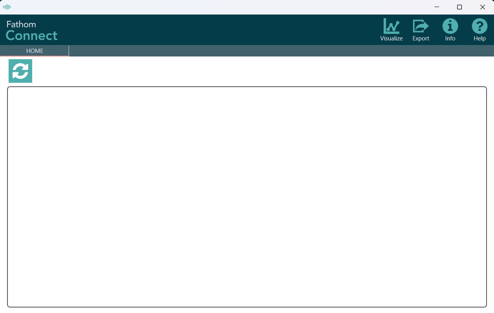
Click the “refresh” button in the top-left of the screen to scan for receivers. It is likely that you will have to do this more than once to pick up the receiver. A tile will appear when the receiver has been identified:
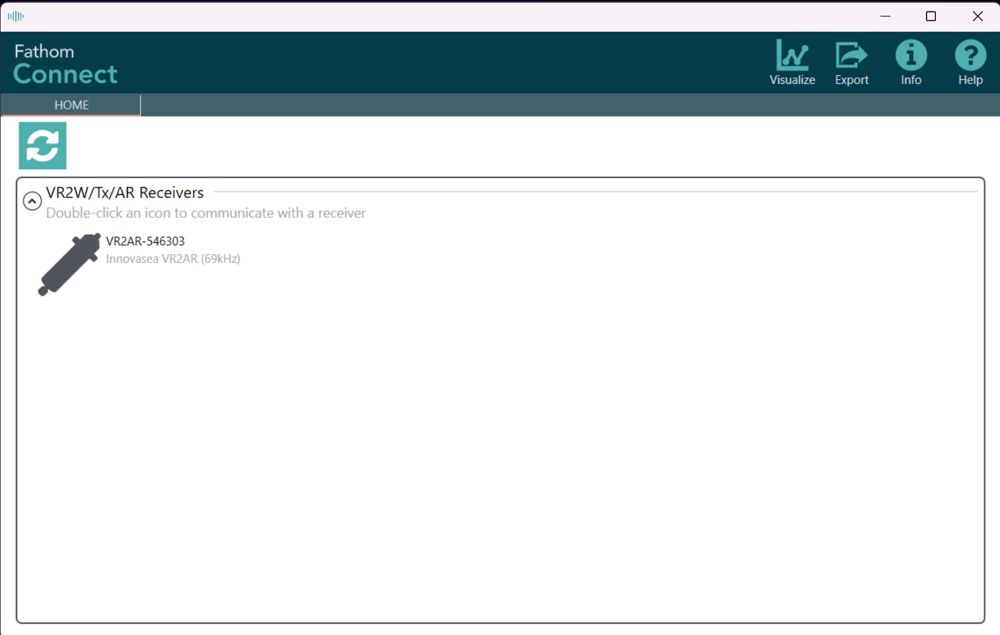
Double click on the receiver.
1.3 Firmware updates
If you have updated Fathom Connect since the last time you connected to your receiver, you will likely be greeted with a window warning you that a new firmware version is available.
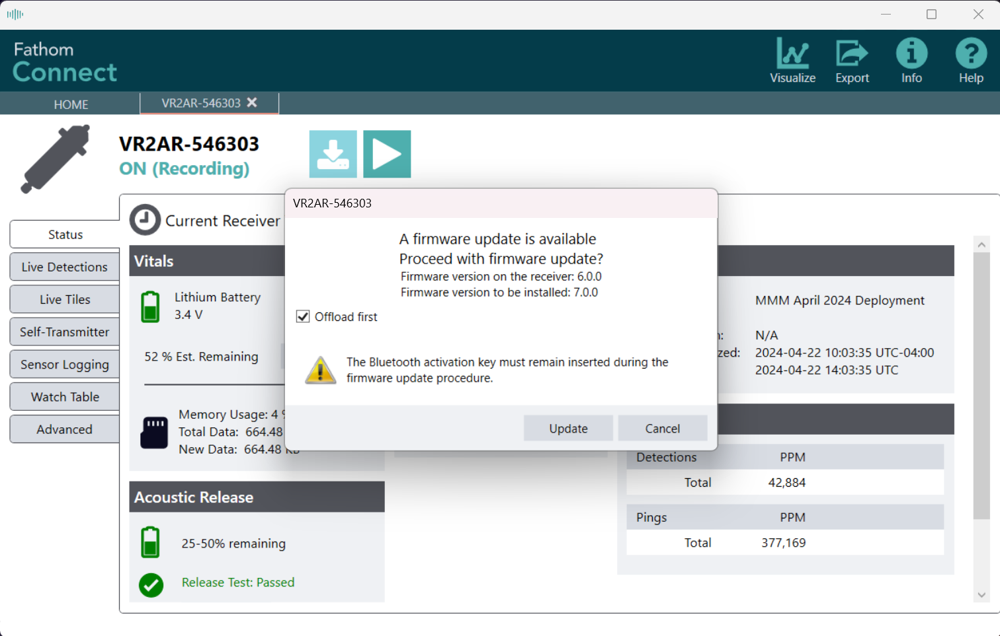
Updating firmware will delete everything on your receiver!
Make sure the “Offload first” box is ticked to save data on the receiver before updating the firmware.
1.4 Offloading data
If you were not prompted to update receiver firmware, you will land on the receiver’s Status page. This provides information on battery usage (both CPU and release battery if connected to an acoustic-release receiver), memory usage, connection type (Bluetooth or cabled), internal transmitter status, study metadata, and logged detections and pings.
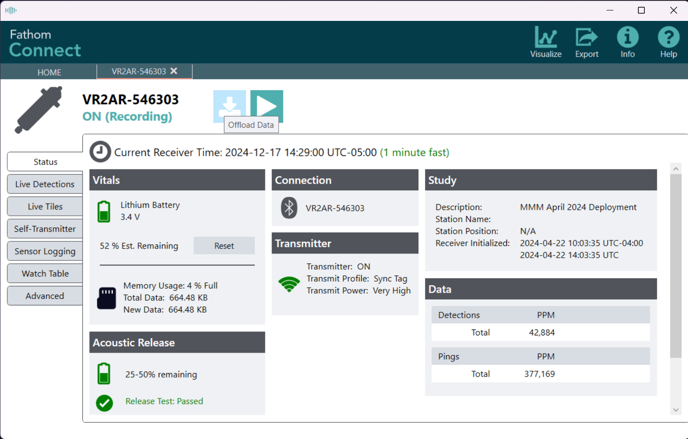
To offload data, click the “download” button near the top-left of the screen.
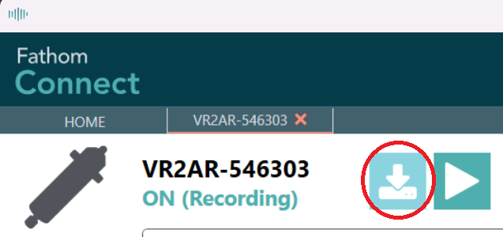
A pop-up will appear asking where you would like the file to be saved and whether you want to offload all data or just new data. Adjust settings and click “Start”.
I suggest always selecting “Offload All Data” to hedge against data loss by having redundant records.
Files are saved to C:\Users\USERNAME\Documents\Innovasea\Fathom\YYYY-mm-DD, where “USERNAME” is your computer’s user name and “YYYY-mm-DD” is today’s date. The “YYYY-MM-DD” portion will be automatically created in the listed directory.
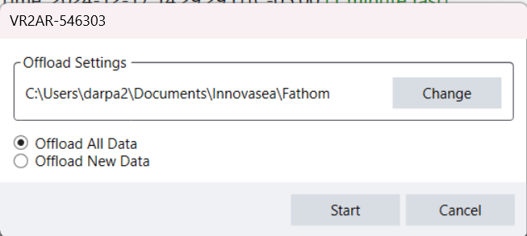
Fathom Connect will ask you to confirm that your computer’s time is correct. If your computer has been connected to the internet for a few minutes, click “OK”.
If your computer has not been connected to the internet for some time, it has likely experienced clock drift (yes, like a receiver!!). Before proceeding, you should confirm your time with a clock that has been connected to the internet (your phone, another computer, etc.).
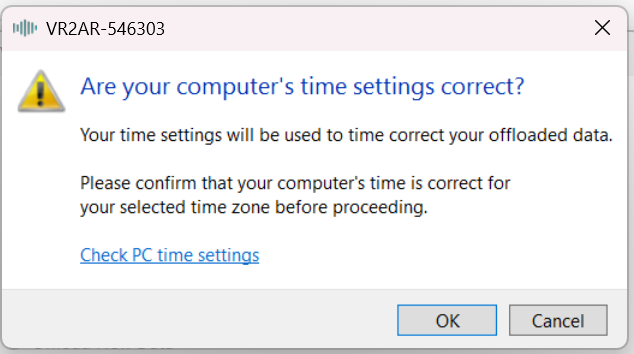
You will be shown a progress window, culminating in (hopefully) a notification of success!
Note that the file name is of the form MODEL-KHZ SERIAL YYYY-mm-DD HHMMSS.vdat, spaces included.
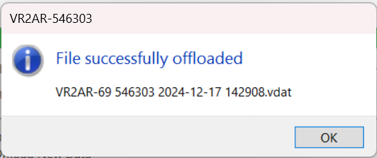
Navigate to the file location to confirm that the file has been downloaded and is where you think it is. By default, the file downloaded above went to C:\Users\MYUSERNAME\Documents\Innovasea\Fathom\2024-12-17 as it was created on December 17, 2024.
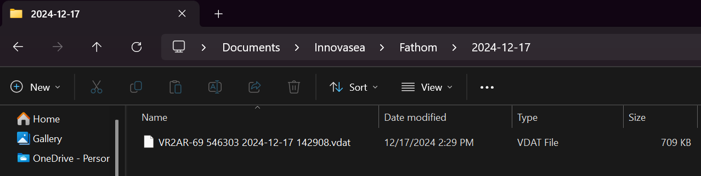
1.5 Internal transmitter
1.5.1 Long-term detection range
If multiple receivers are planned to be deployed within “earshot” of each other (generally within 200-800 meters, environment-dependent) and your receiver has the capability (anything that isn’t a VR2W), it is worthwhile to activate the internal transmitter in order to characterize detection range during the receiver’s future deployment.
Select the Sync Tag option. This will emit the receiver’s programmed transmitter ID every ten minutes, on average.
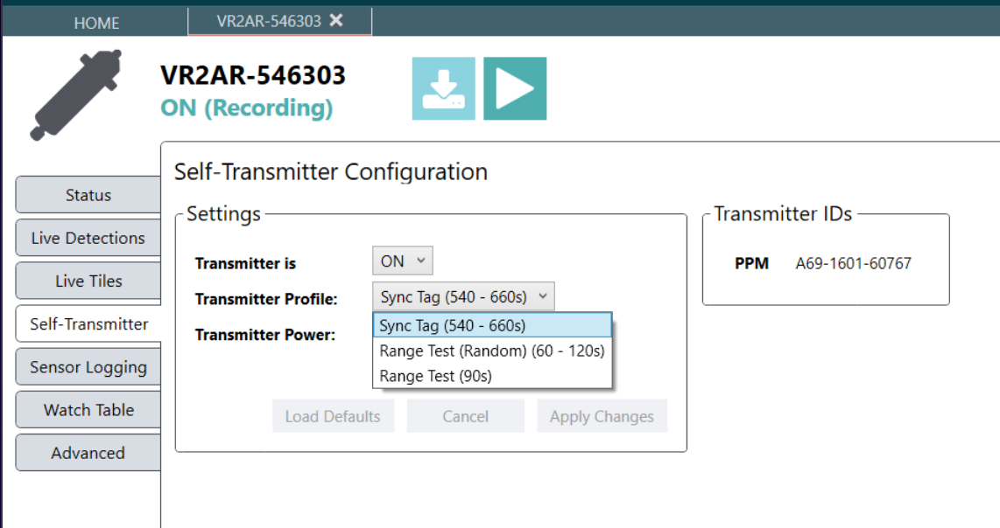
Select a power level that is comparable to the targeted transmitters, listed below.
At the time of this writing, the most commonly-deployed transmitters are V16s; the power level should be set to “High” or “Very High”, with a preference to “Very High” as most studies utilize high power to increase detectability.
- Very High = 160 dB
- High = 154 dB
- Medium = 148 dB
- Low = 142 dB
Transmitter power:
- V16 = 152-162 dB re 1 \(\mu\)Pa @ 1m
- V13 = 147-152 dB re 1 \(\mu\)Pa @ 1m
- V9 = 146-151 dB re 1 \(\mu\)Pa @ 1m
- V8 = 144-147 dB re 1 \(\mu\)Pa @ 1m
- V7 and V6 = 137-141 dB re 1 \(\mu\)Pa @ 1m
Internal transmitter power is not provided at a reference distance and pressure – this is purposeful, as these are not calibrated values and could be off depending on anything from manufacturing variation to the deployed environment. Because of this, we’re just trying to get in the correct range rather than trying to exactly match any values.
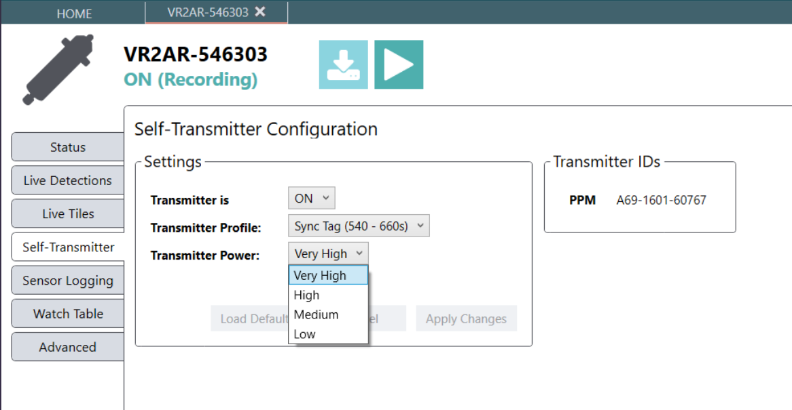
1.6 Study configuration
The best laid plans of mice and men often go awry.
- “To a Mouse”, Robert Burns
To configure a study, hit the “play” button in the top-left.
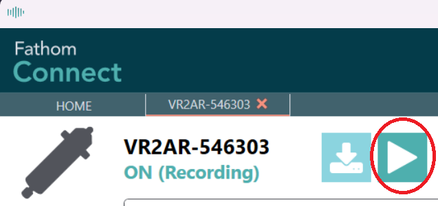
A pop-up window will appear requesting study metadata.
Ocean-Tracking-Network-based networks do not utilize this information when processing or sharing detections. Anything entered here is for your personal use.
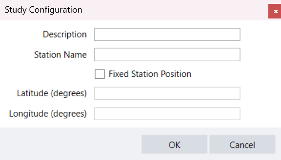
It it my preference to only add a descriptive title. As best laid plans … often go awry, receivers sometimes are deployed at stations and locations that weren’t originally planned. Inputting this information can lead to confusion.
1.7 Closing a session
When everything is finished and you’re ready to deploy the receiver (or put it on the shelf), click the red X.
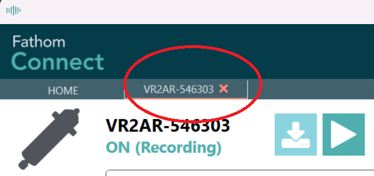